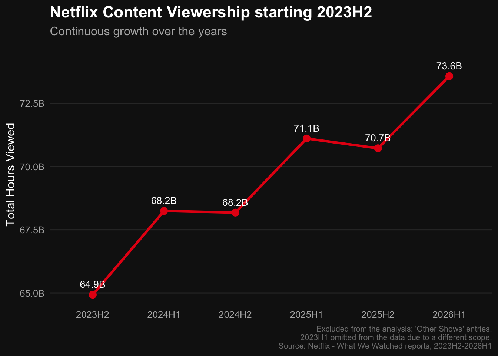
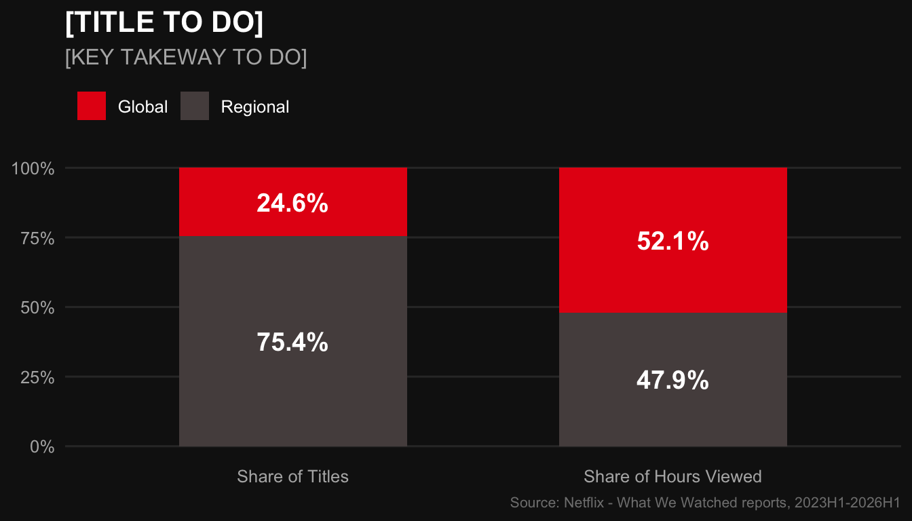
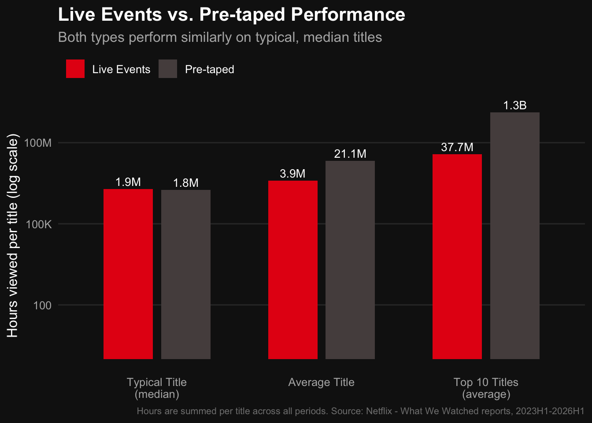

TO: Netflix Leadership FROM: Nastassjia Durand DATE: October 16, 2026 SUBJECT: Strategic Recommendation to inform the 2027 Content Strategy
Number of words: 736 (excluding charts and tables)
For the 2027 content strategy, we recommend focusing on globally available titles while retaining quality in local catalogs, and developing more Live Events to drive adjacent revenues generated by high short-lived, event-driven viewership.
Given the preparation for the 2027 budget, the What We Watched Reports (2023H1-2026H1) were used to analyze past trends on key metrics (hours viewed, global/regional availability, and content typology). Overall, the Netflix viewership has increased over the periods since 2023H2, with a 13% growth, as noted in the graph below. The goal is to find the right strategy to continue the upward trajectory in viewership on a long-term basis.
Note: 2023H1 omitted from data, different scope and reporting strategy.

Our research has found that the share of regional content is larger (75.4%) than the share of globally available titles (24.6%). However, globally available titles absorb 52.1% of the viewership share. This indicates that titles with global availability perform more efficiently, in terms of hours viewed.

The research also found that the most watched titles available globally are mainly composed of Netflix Originals. The top title is Squid Game: Season 2, with 1.6B hours viewed:
Top 15 Globally Available Titles per Hours Viewed
Out of the top 15 global titles, 12 were produced by Netflix and 3 are licensed content1
Title
Hours Viewed
Squid Game: Season 2
1.6B
The Night Agent: Season 1
1.6B
Stranger Things 5
1.5B
Stranger Things 4
1.5B
Wednesday: Season 1
1.4B
King the Land: Limited Series
1.3B
Bridgerton: Season 3
1.2B
Ginny & Georgia: Season 2
1.1B
Queen of Tears: Limited Series
1.1B
Wednesday: Season 2
1.0B
The Glory: Season 1
990.3M
Squid Game: Season 3
955.5M
Pablo Escobar, el patron del mal: Season 1
953.5M
ONE PIECE: Season 1
950.0M
Stranger Things
947.8M
1 Based on research per title, and the logic of Netflix-made content vs. content licensed to Netflix (What's on Netflix, 2023; CJ Newsroom, 2024; Wikipedia, n.d.-b)
Source: Netflix - What We Watched reports, 2023H1-2026H1
The Netflix briefing backs this fact, stating that 55% of viewership are Originals (in 2023H1, Rev, 2023). However, as seen above, we note that top global titles in terms of hours viewed also contain licensed shows with worldwide rights: King the Land, Queen of Tears and Pablo Escobar (What’s on Netflix, 2023; CJ Newsroom, 2024; Wikipedia, n.d.-b).
Focusing on developing global Original content and acquiring globally licensed content will most likely support the continuity in the upward viewership trajectory.
A typical (median) title performs as well for both categories, with 1.9M for Live Events vs. 1.8M for Pre-taped in hours viewed. However, the average title is higher in terms of hours viewed for Pre-taped, with 21.1M vs. 3.9M for Live Events. It stands to reason because Pre-taped titles have a longer historical presence in Netflix’s catalog history and big hits (e.g. Stranger Things) drive the average up, thus having a higher viewership.
Another calculation further supports this argument: the Gini Coefficient, which is commonly used to assess an inequality in any given distribution (with 0% having no inequality and 100% being a perfect inequality). The calculation measures the inequality in the share of viewership across titles. The metric views was used as it’s the closest at estimating how many people watched a title. The results show a high, stable inequality in the viewership with a minimum of 70.0% and a maximum of 71.8% across studied periods (2023H2-2026H1). This calculation thus concludes that high popularity content (across all content type) seizes most viewership in the catalog.

Live Events have shown their capabilities in attracting advertisers and sponsors. Netflix backs this argument by stating that such events bring “outsized value” and, for the Paul vs. Tyson fight, the “most-streamed sporting event ever” (Netflix, 2025). Sources also mention that Netflix “has sold out of advertising inventory” (The Hollywood Reporter, 2024) during two Christmas Day NFL games, with partnerships and in-game segments.
The proposed strategy is to increase “one-shot” Live Events to bring one-off, high-value attention, and increase revenue around advertising and sponsorship - all while complementing Pre-taped content by continuing to enrich historical content, which brings stable and long-tail viewership.
Basing recommendations solely on hours can bias the results, as viewership varies largely based on typology of content (movies vs. TV shows vs. one shot Live Events). Furthermore, deeper analysis on world-region viewership cannot be done at this time, which limits the analysis of global vs. regional content popularity.
The hours viewed alone for a given title doesn’t measure its success (Netflix, 2023). The reports are not compared against any revenue streams (income vs. spending), making it hard to propose solid recommendations by analyzing the viewership vs. associated costs. Finally, a part of non-English titles was dropped in this analysis (noting that all non-English titles accounted for 30% of viewership in the first published report 2023H1, Netflix, 2023).
Proposed next steps include:
Cross-reference viewership data with revenue streams (revenue and costs) to definitively assess successful content streams
Conduct an analysis of the catalog, broken down by world region vs. against global availability to assess the impact of scaling up development of globally available titles, while retaining regionally licensed content viewership
Conduct an exploratory analysis of past Live Events to assess popularity, revenues and performance to determine what typology to eventually develop more
1/ Introduction
The following analysis will deep dive into Netflix’s What We Watched reports, a Netflix strategic initiative to offer insights into their viewership. Based on these reports, the goal is to 1/ identify trends on content, viewership, popularity, catalog content and more and 2/ develop a strategy memo for Netflix’s leadership, to inform on the 2027 original content strategy.
What is the Netflix What We Watched Report? (Netflix, 2023)
Netflix What We Watched Reports - published every 6 months starting in 2023
The “WWW” reports aggregate total global viewership for almost the entire Netflix catalog over six-month period
Key indicators include:
Hours viewed for every title - original and licensed - watched for over 50,000 hours;
The premiere date for any Netflix TV series or film; and
Whether a title was available globally.
2/ Data Ingest and Cleaning
The very first step is to import the data and transform it to make it efficiently usable for analysis.
After importing the data:
Show import and cleaning code
#' Acquire Netflix What We Watched Reports#'#' This function will acquire and standardize all data for MP#01#' from Netflix. Because Netflix hosts the data files behind a CDN, we#' are accessing the release pages and automatically extracting links to the#' relevant files (with CDN hash).#'#' After import, files are stacked vertically and some basic cleaning is#' performed.load_netflix_data <-function() {# Note to students: Make sure you have installed the tidyverse and fs packages# before beginning this assignment. If you aren't sure,# simply run `library(tidyverse)` at your R Console and, if# you don't see an error message, `tidyverse` has been# installed. (Same for `fs`) If you still need to install# either package, use the `install.packages` function as# demonstrated in class.library(tidyverse)library(rvest)library(readxl)library(fs) data_dir <-path("data", "mp01")if (!dir_exists(data_dir)) {dir_create(data_dir, showWarnings =FALSE, recurse =TRUE) } NETFLIX_URLS <-list(`2023H1`="https://about.netflix.com/news/what-we-watched-a-netflix-engagement-report",`2023H2`="https://about.netflix.com/news/what-we-watched-the-second-half-of-2023",`2024H1`="https://about.netflix.com/news/what-we-watched-the-first-half-of-2024",`2024H2`="https://about.netflix.com/news/what-we-watched-the-second-half-of-2024",`2025H1`="https://about.netflix.com/news/what-we-watched-the-first-half-of-2025",`2025H2`="https://about.netflix.com/news/what-we-watched-the-second-half-of-2025",`2026H1`="https://about.netflix.com/news/what-we-watched-the-first-half-of-2026" ) download_if_needed <-function(url, local) {if (!file_exists(local)) {download.file(url, local, quiet =TRUE, mode ="wb") }return(local) } NETFLIX_URLS |>map(read_html) |>map(html_element, xpath ="//a[contains(@href, '.xlsx')]") |>map_chr(html_attr, "href") |>enframe("period", "url") |>mutate(path =path(data_dir, paste0(period, ".xlsx")),path =map2(url, path, download_if_needed),data =map(path, read_excel, skip =3, na ="*"),data =map(data, \(x) x |>mutate(`Release Date`=as.Date(`Release Date`))) ) |>unnest(data) |>select(-url, -path) |>mutate(year =str_sub(period, 1, 4),half =str_sub(period, start =6),period_start =make_date(year, if_else(half ==1, 1, 7), 1),period_end =make_date(year, if_else(half ==1, 6, 12), if_else(half ==1, 30, 31)) ) |>filter(!is.na(`Hours Viewed`)) |>mutate(live_event =!is.na(Runtime) &str_detect(Runtime, "\\d+:\\d+\\*"),clean_time =str_remove(Runtime, fixed("*")),Runtime =60*hour(hm(clean_time)) +minute(hm(clean_time)) ) |>select(-clean_time) |>mutate(Runtime =coalesce(Runtime, mean(Runtime, na.rm =TRUE)),.by = Title,Title = stringi::stri_trans_general(Title, "Latin-ASCII"),Title =str_remove(Title, " // .*"),Title =str_remove(Title, "[^[:ascii:]].*"),Title =str_trim(Title) ) |>filter_out(Title =="") |>select( year, period, period_start, period_end, Title,-half, Runtime, Views,`Hours Viewed`,`Release Date`,`Available Globally?`, live_event ) |>rename(title = Title,runtime = Runtime,views = Views,hours_viewed =`Hours Viewed`,release_date =`Release Date`,available_globally =`Available Globally?` ) |>mutate(year =as.integer(year),available_globally = available_globally =="Yes" ) |>filter_out(title =="Other Shows")}NETFLIX_DATA <-load_netflix_data()
we rename columns in the data set to get valid R variable names, aligned on the same format (e.g. all lower case, multi-word separated by underscores)
we change variable types when appropriate, to ensure that R will interpret them as the correct type for future arithmetic manipulation (e.g. year from chr to int)
we filter out the “Other Shows” entries from the 2025H2 and 2026H1 reports. Netflix changed the report by aggregating many shows together under one bucket, thus not representing a single one. This would cause a distortion in title rankings and comparisons across years/periods.
we note that the data is a mix of numeric, categorical, date, and logical variables. It’s composed of 61,890 rows and 11 columns.
We also note that some columns like views appear to contain NA values, potentially limiting the analyses that rely on this column.
Finally, we can get an idea of what one row represents: one title in one period. It’s worth noting that titles can repeat across periods.
We now take another look at the data, focusing now more on the statistical information,
skim(NETFLIX_DATA)
Data summary
Name
NETFLIX_DATA
Number of rows
61890
Number of columns
11
_______________________
Column type frequency:
character
2
Date
3
logical
2
numeric
4
________________________
Group variables
None
Variable type: character
skim_variable
n_missing
complete_rate
min
max
empty
n_unique
whitespace
period
0
1
6
6
0
7
0
title
0
1
1
217
0
24426
0
Variable type: Date
skim_variable
n_missing
complete_rate
min
max
median
n_unique
period_start
0
1.00
2023-01-01
2026-01-01
2024-01-01
7
period_end
0
1.00
2023-06-30
2026-06-30
2024-06-30
7
release_date
35249
0.43
2010-04-01
2026-06-29
2021-06-17
2487
Variable type: logical
skim_variable
n_missing
complete_rate
mean
count
available_globally
0
1
0.35
FAL: 40171, TRU: 21719
live_event
0
1
0.01
FAL: 61580, TRU: 310
Variable type: numeric
skim_variable
n_missing
complete_rate
mean
sd
p0
p25
p50
p75
p100
hist
year
0
1.00
2024.11
1.08
2023
2023
2024
2025
2026
▇▅▁▅▂
runtime
13083
0.79
467.35
694.71
2
210
320
545
23853
▇▁▁▁▁
views
18196
0.71
1375241.45
3630933.22
100000
100000
400000
1200000
144800000
▇▁▁▁▁
hours_viewed
0
1.00
8243246.08
24603581.87
100000
500000
1800000
6400000
964100000
▇▁▁▁▁
we see that the data set is complete for the majority of the variables, except for numeric runtime (79%) and views (71%) where the complete_rate is below 80%. release_date has a complete rate of 43%, worth noting for further analysis (e.g. analyzing viewership based on release date will be limited).
The mean for hours_viewed is 8.2M and the median is 1.8M, where the mean is about 4.6x the median. We note a heavily skewed distribution, indicating that some titles may be very popular compared to others.
Note: we include a table to see which top titles in what period could explain the skewed distribution.
Show table code
NETFLIX_DATA |>slice_max(hours_viewed, n =5) |>select(title, period, hours_viewed) |>gt() |>tab_header(title ="The 5 Netflix Titles with the Most Hours Viewed",subtitle ="The biggest hits in Netflix's WWW reports, starting 2023" ) |>cols_label(title ="Title",period ="Period",hours_viewed ="Hours Viewed" ) |>fmt_number(columns =c(hours_viewed),suffixing =TRUE, decimals =1 ) |>tab_source_note("Source: Netflix - What We Watched reports, 2023H1-2026H1") |>netflix_theme()
The 5 Netflix Titles with the Most Hours Viewed
The biggest hits in Netflix's WWW reports, starting 2023
Title
Period
Hours Viewed
Wednesday: Season 2
2025H2
964.1M
Bridgerton: Season 4
2026H1
889.8M
Stranger Things 5
2025H2
879.7M
Squid Game: Season 2
2025H1
840.3M
The Night Agent: Season 1
2023H1
812.1M
Source: Netflix - What We Watched reports, 2023H1-2026H1
The most popular titles are seasons from different shows, indicating that the popularity is broken down by season, and not show overall.
4/ Exploratory Questions
Now that we have looked at the data set structure and gotten an idea of its content, we deep dive into some key representative facts about the WWW reports. This allows us to understand the specific content, and not only the statistical components.
First, we note that the date ranges from January 01, 2023 to June 30, 2026. The reports thus started in 2023, and are broken down into 6-month periods (with 7 total periods so far).
Besides the total number of entries in the data set, what is interesting is to see how many distinct titles exist. The total number of shows and movies in the data set is 24,426. This is very different from the number of entries, 61,890, confirming that titles may appear several times across periods.
Out of the very popular shows on Netflix, we take a look at the Bridgerton Universe and Stranger Things. While the Bridgerton Universe is broadly viewed with 4.9B total hours, the five seasons of the Stranger Things show accumulate 5.5B total hours. It surpasses the Bridgerton Universe by 14% (a close race).
Another exploration is to see what percentage of the total watch time in the first 6 months of 2026 (2026H1) was spent on the top 10 titles. For 2026H1, 6.2% of watch time was spent on the top 10 titles, out of all 8,186 available titles.
Finally, to get a sense of Netflix’s global reach, we look at what fraction of the catalog is available globally by both title and hours viewed. The share of the Netflix catalog available globally is 24.6% by title, and 52.1% weighted by hours viewed. This demonstrates that shows available globally are more popular in terms of viewership, even if they are not as offered as regional content, compared to the whole catalog.
5/ Exploratory Tables
Now we dig deeper into the analysis, by looking at specific aspects of the data set, to compare, evaluate and draw preliminary conclusions. Tables are used to help to visualize the outputs.
The goal is to retrieve the top title (by total hours viewed) in each period, and compare it to total viewership. This helps answer the question: how dominant can a single hit be?
Show table code
top_by_period <- NETFLIX_DATA |>mutate(share = hours_viewed /sum(hours_viewed), .by = period) |>slice_max(hours_viewed, n =1, by = period, with_ties =FALSE) |>select(period, title, hours_viewed, share)top_by_period |>gt() |>tab_header(title ="Top Title per Period",subtitle ="TV shows dominate movies in top titles across each period" ) |>cols_label(period ="Period",title ="Title",hours_viewed ="Hours Viewed",share ="Share of Period Hours Viewed" ) |>fmt_number(columns = hours_viewed, suffixing =TRUE, decimals =1) |>fmt_percent(columns = share, decimals =1) |>tab_source_note("Source: Netflix - What We Watched reports, 2023H1-2026H1") |>netflix_theme()
Top Title per Period
TV shows dominate movies in top titles across each period
Period
Title
Hours Viewed
Share of Period Hours Viewed
2023H1
The Night Agent: Season 1
812.1M
0.9%
2023H2
King the Land: Limited Series
630.2M
1.0%
2024H1
Bridgerton: Season 3
733.8M
1.1%
2024H2
Squid Game: Season 2
619.9M
0.9%
2025H1
Squid Game: Season 2
840.3M
1.2%
2025H2
Wednesday: Season 2
964.1M
1.4%
2026H1
Bridgerton: Season 4
889.8M
1.2%
Source: Netflix - What We Watched reports, 2023H1-2026H1
Across periods, similar trends are observed: hours viewed range from 619.9M to 964.1M, and the share is stable and similar across periods, from 0.9% to 1.4%. This suggests that, although the top title by hours viewed can be much higher than other shows, the share is relatively small (meaning that the viewership is either spread out across the catalog, or that the catalog choice is very extensive).
Furthermore, as observed in the table, the top titles are TV shows across all periods. This indicates the biggest hits on the platform are recurring popular TV shows (with Bridgerton and Squid Game appearing twice, different seasons).
Now that the top titles have been reviewed, we assess the evolution of available titles and run time across the whole catalog (2023H1-2026H1). Although limited since the reports started in 2023, it matters to see how Netflix evolved across the years and if it impacted the run times.
Show table code
missing_by_period <- NETFLIX_DATA |>summarize(missing_runtime =mean(is.na(runtime)),.by = period )catalog_by_period <- NETFLIX_DATA |>summarize(n_titles =n_distinct(title),total_runtime_minutes =sum(runtime, na.rm =TRUE),total_runtime_hours = total_runtime_minutes /60,.by = period )catalog_by_period |>gt() |>tab_header(title ="Netflix's Catalog Evolution Across Periods",subtitle ="A steady growth across the catalog, despite a drop in number of titles between 2023H1 and H2" ) |>cols_label(period ="Period",n_titles ="Number of Titles",total_runtime_minutes =md("Total Run Time (*minutes*)"),total_runtime_hours =md("Equivalent Total Run Time (*hours*)") ) |>fmt_number(columns = n_titles, decimals =0) |>fmt_number(columns =c(total_runtime_minutes, total_runtime_hours), suffixing =TRUE, decimals =1) |>tab_footnote(footnote ="Large amount of missing values in the run time of the 2023H1 period.",locations =cells_body(columns =c( total_runtime_minutes, total_runtime_hours ),rows = period =="2023H1" ) ) |>tab_source_note("Source: Netflix - What We Watched reports, 2023H1-2026H1") |>netflix_theme()
Netflix's Catalog Evolution Across Periods
A steady growth across the catalog, despite a drop in number of titles between 2023H1 and H2
Period
Number of Titles
Total Run Time (minutes)
Equivalent Total Run Time (hours)
2023H1
18,126
1 2.6M
1 43.7K
2023H2
6,574
3.0M
50.1K
2024H1
6,775
3.1M
51.8K
2024H2
6,854
3.2M
53.6K
2025H1
7,473
3.5M
58.4K
2025H2
7,711
3.6M
59.7K
2026H1
8,162
3.8M
62.9K
1 Large amount of missing values in the run time of the 2023H1 period.
Source: Netflix - What We Watched reports, 2023H1-2026H1
2023H1 shows a high number of titles available, with a low total run time value (compared to other periods). We note a steep decline in number of titles (by 64%) between 2023H1 and 2023H2. We run a check on missing run time in 2023H1 compared to all other periods. The fraction of missing values reaches 68% for 2023H1, compared to all other periods with at most 1.7%. Netflix made improvements in the reports with the May 2024 update, by adding run time and views. This confirms that the first report 2023H1 was published without these columns, thus explaining the low run time (Netflix, 2023).
Despite the decline, a steady growth appears in the following periods, without any decline across both number of titles and total run time.
Note: titles with less than 50,000 hours of watch time are omitted from the reports. Some titles may therefore be missing (as stated in Netflix, 2023).
Since the reports started, we wonder which titles have the most consistent high viewership across all periods. This question is particularly interesting, as the titles that will show may likely be “staples”, that viewers fall back on over and over. They will likely be present in every period (given that the show was already out starting 2023H1).
Show table code
n_periods_total <-n_distinct(NETFLIX_DATA$period)staples <- NETFLIX_DATA |>summarize(n_periods =n_distinct(period),avg_hours =mean(hours_viewed),min_hours =min(hours_viewed),sd_hours =sd(hours_viewed),.by = title ) |>filter(n_periods == n_periods_total) |>mutate(cv = sd_hours / avg_hours) |>slice_max(min_hours, n =10) |>select(title, avg_hours, min_hours, cv)staples |>gt() |>tab_header(title ="Highest Consistent Viewership Across all Periods",subtitle =md("Consistently high viewership around *old* shows, with high variability around season outings and revivals") ) |>cols_label(title ="Title",avg_hours ="Avg. Hours Viewed per Period",min_hours ="Lowest Period",cv =md("Variability (*CV*)") ) |>fmt_number(columns =c(avg_hours, min_hours), suffixing =TRUE, decimals =1) |>fmt_percent(columns = cv, decimals =0) |>tab_source_note("Note 1: Titles present across all periods, ranked by lowest period hours.") |>tab_source_note("Note 2: CV = standard deviation / mean.") |>tab_source_note("Source: Netflix - What We Watched reports, 2023H1-2026H1") |>netflix_theme()
Highest Consistent Viewership Across all Periods
Consistently high viewership around old shows, with high variability around season outings and revivals
Title
Avg. Hours Viewed per Period
Lowest Period
Variability (CV)
Pablo Escobar, el patron del mal: Season 1
136.2M
105.5M
17%
Chiquititas (2013)
120.0M
105.0M
16%
Stranger Things 4
207.4M
97.1M
83%
Suits (2011): Season 1
126.9M
80.9M
47%
Breaking Bad: Season 2
91.6M
78.5M
13%
Suits (2011): Season 2
120.3M
76.1M
51%
Sam & Cat: Season 1
91.2M
75.7M
15%
Breaking Bad: Season 5
84.1M
74.9M
13%
Money Heist: Part 1
80.6M
73.1M
12%
Breaking Bad: Season 3
82.0M
70.9M
13%
Note 1: Titles present across all periods, ranked by lowest period hours.
Note 2: CV = standard deviation / mean.
Source: Netflix - What We Watched reports, 2023H1-2026H1
This output suggests that, across all periods, the most reliable titles with the consistent highest viewership are mostly licensed classics, with one Original exception.
We note two different kinds in this table: 7 shows with rather low variability with 30% as a threshold (between 12% and 17%), and 3 shows with high variability (between 47% and 83%). Looking at the titles and with common knowledge, we note a potential explanation around new season releases or digital revival, increasing viewership.
Indeed, when shows have new releases, or digital revivals, it can be assumed that, although viewership is present, the spikes raise their average and variability. The biggest hits center more around new shows, while the most consistent ones are more “older” shows.
What about the share of shows vs. movies? The raw data set doesn’t give that indication. To find the answer, we define two criteria that will be used for the output:
Length: anything over ~4 hours is almost certainly a TV show, not a movie
“Season”: if a title has “Season” or “Limited Series” in it, it is almost certainly a TV show
It is important to note that:
As previously found, there is a high number of missing values in the run time (especially for 2023H1). We therefore use a criterion to classify titles with missing run time with the keywords only
The way Netflix names titles is a bit inconsistent in how it represents different seasons of TV shows (e.g. Seinfeld: Season 1 and Seinfeld: Season 3, but Stranger Things and Stranger Things 3). The ratios may therefore be limited, if the classification is solely based on title names
Show table code
shows_movies <- NETFLIX_DATA |>mutate(type =if_else(str_detect(title, "Season|Limited Series") |coalesce(runtime >240, FALSE),"Shows", "Movies" )) |>summarize(hours =sum(hours_viewed), .by =c(period, type)) |>mutate(share = hours /sum(hours), .by = period) |>select(period, type, share) |>pivot_wider(names_from = type, values_from = share)shows_movies |>gt() |>tab_header(title ="Fraction of Viewership Classified by Shows and Movies",subtitle ="Overall stable distribution between shows and movies, with shows leading in the race" ) |>cols_label(period ="Period") |>fmt_percent(columns =c(Shows, Movies), decimals =1) |>tab_source_note("Note: TV show/movie classified based on title keywords and run time over 4 hours.") |>tab_footnote(footnote ="High number of run time values missing in 2023H1, classification based on title keywords only.",locations =cells_body(columns =c(Shows, Movies),rows = period =="2023H1" ) ) |>tab_source_note("Source: Netflix - What We Watched reports, 2023H1-2026H1") |>netflix_theme()
Fraction of Viewership Classified by Shows and Movies
Overall stable distribution between shows and movies, with shows leading in the race
Period
Shows
Movies
2023H1
1 70.5%
1 29.5%
2023H2
97.5%
2.5%
2024H1
97.4%
2.6%
2024H2
97.5%
2.5%
2025H1
97.5%
2.5%
2025H2
97.1%
2.9%
2026H1
97.0%
3.0%
1 High number of run time values missing in 2023H1, classification based on title keywords only.
Note: TV show/movie classified based on title keywords and run time over 4 hours.
Source: Netflix - What We Watched reports, 2023H1-2026H1
We note a common pattern across all periods, with an average of 97.3% viewing time for shows and 2.7% for movies. We exclude 2023H1 from these averages for the same reason mentioned above, the 68% missing run time.
Based on the rule, titles with missing run times are classified based solely on the presence of keywords such as “season”. This may expose an issue in the ratio shows vs. movies in 2023H1 versus all other periods.
Furthermore, we note that there is a specific variable, which flags a given title as a live_event or not. Live Events are programs that stream live on Netflix. It’s a specific format, an innovative strategy for Netflix (who traditionally runs pre-recorded content), varying from sports events to comedy specials.
Note: average viewership will almost certainly be lower for Live Events, as it’s short “one-shot” content. Therefore, the analysis cannot purely compare hours_viewed in order to get a real sense of popularity by viewership.
Show table code
runtime_by_group <- NETFLIX_DATA |>distinct(title, .keep_all =TRUE) |>mutate(group =case_when( live_event ~"Live Events",str_detect(title, "Season|Limited Series") |coalesce(runtime >240, FALSE) ~"Shows",TRUE~"Movies" )) |>summarize(median_runtime_hours =median(runtime, na.rm =TRUE) /60,.by = group )live_vs_taped <- NETFLIX_DATA |>summarize(hours =sum(hours_viewed),live =any(live_event),.by = title ) |>mutate(type =if_else(live, "Live Events", "Pre-taped")) |>summarize(n_titles =n(),avg_hours =mean(hours),median_hours =median(hours),top10_avg_hours =mean(head(sort(hours, decreasing =TRUE), 10)),.by = type )live_vs_taped |>gt() |>tab_header(title ="Comparison of Pre-taped and Live Events Content Viewership",subtitle ="Although Pre-taped performs higher in hours viewed, Live Events can create value in high 'one-shot' viewership" ) |>cols_label(type ="Content Category",n_titles ="Titles",avg_hours ="Avg. Hours Viewed",median_hours ="Median Hours Viewed",top10_avg_hours ="Top 10 Avg. Hours Viewed" ) |>fmt_number(columns = n_titles, decimals =0) |>fmt_number(columns =c(avg_hours, median_hours, top10_avg_hours),suffixing =TRUE, decimals =1 ) |>tab_source_note("Note 1: Hours are summed per title across all periods.") |>tab_source_note("Note 2: Top 10 Avg. represents the average hours of the 10 titles with highest hours viewed in each group.") |>tab_source_note("Source: Netflix - What We Watched reports, 2023H1-2026H1") |>netflix_theme()
Comparison of Pre-taped and Live Events Content Viewership
Although Pre-taped performs higher in hours viewed, Live Events can create value in high 'one-shot' viewership
Content Category
Titles
Avg. Hours Viewed
Median Hours Viewed
Top 10 Avg. Hours Viewed
Pre-taped
24,140
21.1M
1.8M
1.3B
Live Events
286
3.9M
1.9M
37.7M
Note 1: Hours are summed per title across all periods.
Note 2: Top 10 Avg. represents the average hours of the 10 titles with highest hours viewed in each group.
Source: Netflix - What We Watched reports, 2023H1-2026H1
The number of distinct titles for each category confirms that, traditionally, Netflix runs more Pre-taped content than Live Events (24,140 vs. 286).
However, when we look at the median hours viewed, which isn’t affected by outliers (e.g. big hits in Pre-taped content), we see that it’s almost identical across both (1.8M for Pre-taped and 1.9M for Live Events). This indicates that the typical titles for each category perform similarly, even though hours viewed averages are very different (21.1M vs. 3.9M).
Finally, we analyze “top tiers” with a top 10 viewership metric for each category, and we notice a big gap between a 1.3B average hours for Pre-taped content and 37.7M for Live Events. That is 35x more.
A few plausible explanations include:
The popularity of Pre-taped content outshines Live Events in terms of lifetime. TV shows have been running and are being watched for a long time, thus surpassing Live Events which are more one-off and recent
The median length of a TV show (being the dominating type in Netflix’s catalog, as noted before) is much longer than a one-shot Live Event (with 6 hours for TV shows and 1.9 hours for Live Events). Even if median hours viewed are almost identical, a TV show will almost always account for more hours viewed.
Both types create value in a different way. Pre-taped content will shine on the long run, with more viewership across the years (and spikes with hits), whereas “one-shot” Live Events do create value by building a high audience in one moment (which can bring a lot of adjacent revenues such as advertising, sponsorship etc.).
The Gini Coefficient is a mathematical formula used to measure inequality in a given distribution. The best example is when measuring inequality in income distribution (Wikipedia, n.d.-a). The math is simple: the lower the coefficient, the more equal the distribution is. The same logic work the other way around; the higher the coefficient, the higher the inequality. The percentage range in the output is as follows: 0 representing a perfect equality and 100 a perfect inequality, where one value takes it all.
Below is an example of the output the formula will give, on two different sets:
[10, 10, 10, 10, 10], which will give a coefficient of: 0%
[0, 0, 0, 0, 100], with a coefficient of: 80%
The first set shows perfect equality, with 0%, in both the values and the coefficient, with only tens. When we change the set with only zeros and a 100, the coefficient climbs to 80%, demonstrating inequality in the set. Since there are only 5 values, the maximum coefficient can only reach 80%.
We test another example. Suppose a country has only 5 citizens, and their incomes are as follows:
Citizen: [Alice, Barbara, Carol, Debbie, Emily]
Income: [20k, 200k, 0k, 50k, 40k]
We run the coefficient and find 55.5%. This result indicates a fairly high inequality in the income data set (which stands to reason when looking at the income with 0k and 200k opposites).
Now, we take a look at the Netflix data set. There are two different ways we can run the coefficient:
By hours viewed - the global aggregate view time (in hours) during the period of a given title (appears to be rounded to the nearest 100,000 hours and low viewership shows, with titles with less than 50,000 hours being omitted)
By views - the approximate number of views, rounded and computed by dividing Hours Viewed by Runtime (which assumes that all viewers watched a title in its entirety, with obvious limitations).
Assessing by views could be considered as more accurate, since it evaluates a title in a given period by trying to get the number of people who watched one title (excluding the length difference between a movie and a TV show). On the other hand, hours viewed will be better at evaluating the time spent on the platform (although it will not differentiate the popularity bs. the length). Both serve a different purpose, but both are valuable.
Since the two variables appears to have limitations, we run and analyze both in the Gini coefficient.
Note: again, since views data were added starting 2023H2, we omit the data from 2023H1.
Show Gini Coefficient table code
gini_by_period <- NETFLIX_DATA |>filter_out(period =="2023H1") |>summarize(gini_hours =gini(hours_viewed),gini_views =gini(views),.by = period )gini_by_period |>gt() |>tab_header(title ="Gini Coefficient Applied to Hours Viewed and Views",subtitle ="High, stable inequality across all periods, indicating high viewership on popular titles" ) |>cols_label(period ="Period",gini_hours ="Gini (Hours Viewed)",gini_views ="Gini (Views)" ) |>fmt_percent(columns =c(gini_hours, gini_views), decimals =1) |>tab_source_note("Note 1: 2023H1 omitted from the data due to a different scope.") |>tab_source_note("Note 2: titles with less than 50,000 hours of watch time are omitted from the reports.") |>tab_source_note("Source: Netflix - What We Watched reports, 2023H2-2026H1") |>netflix_theme()
Gini Coefficient Applied to Hours Viewed and Views
High, stable inequality across all periods, indicating high viewership on popular titles
Period
Gini (Hours Viewed)
Gini (Views)
2023H2
73.8%
70.0%
2024H1
74.2%
70.4%
2024H2
74.6%
70.9%
2025H1
75.1%
71.8%
2025H2
74.7%
71.1%
2026H1
75.2%
70.8%
Note 1: 2023H1 omitted from the data due to a different scope.
Note 2: titles with less than 50,000 hours of watch time are omitted from the reports.
Source: Netflix - What We Watched reports, 2023H2-2026H1
No matter what the variable, all outputs from the Gini Coefficient show a stable, high inequality in the data. The lowest score for Hours Viewed is 73.8% in 2023H2 and reaches up to 75.2% in 2026H1. Similarly, the lowest score for Views is 70.0% in 2023H2 and reaches up to 71.8% in 2025H1.
But why compare hours viewed and views? Hours viewed will systematically be higher than views (as explained earlier). Hours viewed measure the total time spent on a title, whereas views estimates how many people watched a title (although noting that the estimation is limited). Views thus favor reach over quantity, in terms of how many people watched a title, removing the inequality in length of a TV show vs. a movie.
The inequality therefore comes mostly from popularity and not length (since the views estimation removes the length issue). The views Gini are only 3.8 percentage points lower than hours viewed Gini. The results are thus a clear indicator of popular, big hits titles taking over the attention compared to other titles in a given period. Popular titles (no matter the origin) have a tendency to dominate Netflix’s viewership.
7/ Conclusion
The data in the What We Watched Netflix reports proved to be valuable. It brought key insights into data quality, catalog substance, viewership and content typology that allows to make estimations for future content strategies. Main findings include:
we note a steady growth over the years, broken down by periods (since 2023H2)
Globally vs. Regionally available content: global content lead in viewership despite not being the main type available in the catalog
Viewership concentration gravitate around popular titles that absorb the majority of viewership
Live Events vs. Pre-taped content: Live Events attract high one-shot viewership and adjacent revenue, while Pre-taped content ensure high viewership through big hits
Although limited in cross-reference data (such as revenue streams, world presence break downs etc.), we get a sense of what is popular on the platform, what could be improved and what customers actually watch.
This analysis once again proved how valuable it is to analyze performance based on real data, to understand and offer adapted content that will bring novelty and retain loyalty in a given product.
Memo: Supporting Code
Show Period over Period trend calculation and chart code
hours_by_period <- NETFLIX_DATA |>filter_out(period =="2023H1") |>summarize(total_hours =sum(hours_viewed), .by = period) |>arrange(period)chart_trend <-ggplot(hours_by_period, aes(x = period, y = total_hours, group =1)) +geom_line(color = netflix_red, linewidth =1.2) +geom_point(color = netflix_red, size =3) +geom_text(aes(label =fmt_hours(total_hours)),vjust =-1, color ="white", size =3.5 ) +scale_y_continuous(labels = fmt_hours,expand =expansion(mult =c(0.05, 0.15)) ) +labs(title ="Netflix Content Viewership starting 2023H2",subtitle ="Continuous growth over the years",x =NULL, y ="Total Hours Viewed",caption ="Excluded from the analysis: 'Other Shows' entries.\n2023H1 omitted from the data due to a different scope.\nSource: Netflix - What We Watched reports, 2023H2-2026H1" ) +ggplot_theme_netflix()
Show Top 15 titles available globally code
top_global <- NETFLIX_DATA |>filter(available_globally) |>summarize(total_hours =sum(hours_viewed), .by = title) |>slice_max(total_hours, n =15)licensed_titles <-c("King the Land: Limited Series","Queen of Tears: Limited Series","Pablo Escobar, el patron del mal: Season 1")n_licensed <-sum(top_global$title %in% licensed_titles)n_original <-nrow(top_global) - n_licensedtable_top_global <- top_global |>gt() |>tab_header(title ="Top 15 Globally Available Titles per Hours Viewed",subtitle =paste0("Out of the top ", nrow(top_global)," global titles, ", n_original," were produced by Netflix and ", n_licensed," are licensed content" ) ) |>cols_label(title ="Title",total_hours ="Hours Viewed" ) |>fmt_number(columns = total_hours, suffixing =TRUE, decimals =1) |>tab_source_note("Source: Netflix - What We Watched reports, 2023H1-2026H1") |>tab_options(table.font.size =px(11),data_row.padding =px(1),table.width =pct(60) ) |>tab_footnote(footnote ="Based on research per title, and the logic of Netflix-made content vs. content licensed to Netflix (What's on Netflix, 2023; CJ Newsroom, 2024; Wikipedia, n.d.-b)",locations =cells_title(groups ="subtitle") ) |>netflix_theme()
Show Globally vs. Regionally available titles chart code
global_chart <-tibble(measure =factor(rep(c("Share of Titles", "Share of Hours Viewed"), each =2),levels =c("Share of Titles", "Share of Hours Viewed") ),availability =rep(c("Global", "Regional"), times =2),share =c( available_globally_by_title, 1- available_globally_by_title, available_globally_by_hours, 1- available_globally_by_hours ))chart_global <-ggplot(global_chart, aes(x = measure, y = share, fill = availability)) +geom_col(width =0.6) +geom_text(aes(label = scales::percent(share, accuracy =0.1)),position =position_stack(vjust =0.5),color ="white", fontface ="bold", size =5 ) +scale_fill_manual(values =c("Global"= netflix_red, "Regional"="#564D4D")) +scale_y_continuous(labels = scales::percent) +labs(title ="Global vs. Regional Content Performance",subtitle ="Higher share of Regional titles, with a higher performance in hours viewed for Global",x =NULL, y =NULL, fill =NULL,caption ="Source: Netflix - What We Watched reports, 2023H1-2026H1" ) +ggplot_theme_netflix()
Show Live Events vs. Pre-taped comparison chart code
live_chart <- live_vs_taped |>select(type, median_hours, avg_hours, top10_avg_hours) |>pivot_longer(-type, names_to ="metric", values_to ="hours") |>mutate(metric =factor(metric,levels =c("median_hours", "avg_hours", "top10_avg_hours"),labels =c("Typical Title\n(median)","Average Title","Top 10 Titles\n(average)" ) ))chart_live <-ggplot(live_chart, aes(x = metric, y = hours, fill = type)) +geom_col(position =position_dodge(width =0.7), width =0.6) +geom_text(aes(label =fmt_hours(hours)),position =position_dodge(width =0.7),vjust =-0.4, color ="white", size =3.5 ) +scale_y_log10(labels = scales::label_number(accuracy =1,scale_cut = scales::cut_short_scale() )) +scale_fill_manual(values =c("Live Events"= netflix_red,"Pre-taped"="#564D4D" )) +labs(title ="Live Events vs. Pre-taped Performance",subtitle ="Both types perform similarly on typical titles",x =NULL, y ="Hours viewed per title (log scale)", fill =NULL,caption ="Hours are summed per title across all periods. Source: Netflix - What We Watched reports, 2023H1-2026H1" ) +ggplot_theme_netflix()
Sources
CJ Newsroom (2024). Queen of Tears Is Now a Global Phenomenon. CJ Corporation. newsroom.cj.net.
Netflix (2026). What We Watched the First Half of 2026. Netflix Newsroom. Image from about.netflix.com.
Netflix (2025). Fourth Quarter 2024 Letter to Shareholders [Form 8-K, Exhibit 99.1]. U.S. Securities and Exchange Commission. sec.gov.
Netflix (2023, updated 2024). What We Watched: A Netflix Engagement Report. Netflix Newsroom. about.netflix.com.
Rev (2023). Netflix Shares Detailed Viewing Figures for the First Time [Transcript of Netflix press briefing]. Rev. rev.com.
The Hollywood Reporter (2024). Netflix Ad Tier Update: Users Surge, Christmas Day NFL Games Sold Out. The Hollywood Reporter. hollywoodreporter.com.
Wikipedia (n.d.-a). Gini coefficient. Wikipedia. en.wikipedia.org.
Wikipedia (n.d.-b). Pablo Escobar, The Drug Lord. Wikipedia. en.wikipedia.org.
What’s on Netflix (2023). ‘King the Land’ Netflix K-Drama Season 1. What’s on Netflix. whats-on-netflix.com.
NoteAI Usage Statement
Claude was used to help with the code in this project. Help included answering to questions about different ideas for improving the code and the rendering, debugging code, cross-checking, ideas on improving tables etc. All non-code text was generated without the use of any Generative AI tools. Additionally, Claude was used to provide explanations in very simple terms, additional background information on the topic (e.g. what are Netflix’s live events), and to brainstorm ideas.